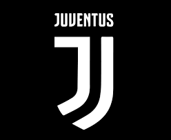
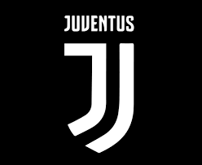

| Equipos Futbool |
|---|
Inicio |
Real Madrid |
PSG |
Manchester United |
Juventus |
|---|
| Real Madrid | PSG | Manchester United | Juventus |
|---|---|---|---|
|
|
|
 |
| El Real Madrid es uno de los clubes de fútbol más laureados del mundo y de Europa . En el fútbol nacional, el club ha ganado 71 trofeos: un récord de 36 títulos de La Liga, 20 Copas del Rey, 13 Supercopas de España, una Copa Eva Duarte y una Copa de la Liga. | El Paris Saint-Germain Football Club se fundó en agosto de 1970 tras la fusión del Paris Football Club y el Stade Saint-Germain . El PSG causó un impacto inmediato, logrando el ascenso a la Primera División y el título de la Segunda División en su primera temporada. Sin embargo, su impulso pronto se vio frenado y el club se escindió en 1972. | El Manchester United, uno de los equipos más exitosos en la historia del fútbol, tiene una historia rica y llena de logros. Fundado en 1878 como Newton Heath LYR F.C., el club fue conocido como Newton Heath hasta 1902, cuando se cambió a su actual nombre, Manchester United Football Club. El club ha conquistado un total de 62 trofeos, incluyendo 20 títulos de liga, 12 Copas FA y 6 Copas de la Liga. | La Juventus fue fundada en 1897 por un grupo de estudiantes de secundaria . El equipo, que no jugó un partido oficial de liga hasta 1900, empezó vistiendo camisetas rosas. Sus uniformes actuales, con camisetas a rayas verticales blancas y negras, se adoptaron en 1903. |
Derechos reservados:
Marcos Mendoza Macedonio.